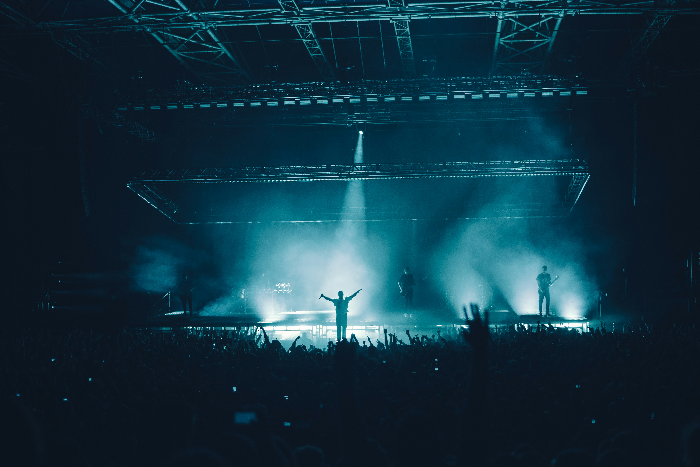
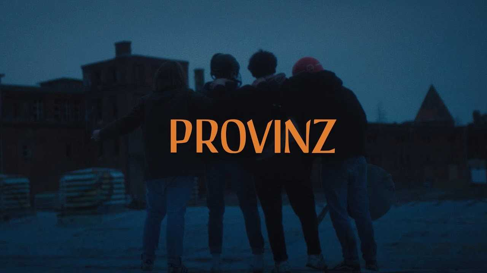

Sound of a new generation
German indie pop has become one of the most influential genres for a younger generation. Artists like Provinz, Jeremias, Berq, Tjark, and Mathi create music that feels emotional, nostalgic, and deeply personal. Their songs often talk about growing up, relationships, memories, and the feeling of searching for a place to belong.
Unlike mainstream pop music, German indie focuses less on perfection and more on authenticity. Soft guitar melodies, reflective lyrics, and calm production create a sound that feels intimate and close to everyday life. Recurring themes are growing up, moving into the city or thoughts about life in general.

Live performances are an important part of the indie scene. Smaller venues, warm lighting, and close interaction between artists and fans create an atmosphere that feels personal rather than distant. Instead of large productions and perfect choreography, many indie concerts focus on emotion and connection. Fans often sing along to every lyric, turning concerts into shared emotional experiences rather than simple performances. Even as some artists move onto larger festival stages, the scene still keeps its emotional closeness and authenticity. Many musicians continue to write about personal experiences, relationships, homesickness, or the uncertainty of growing up. This honesty is one of the reasons why listeners feel so connected to the music. German indie is also shaped by its strong visual identity. Film photography, muted colors, oversized clothing, and nostalgic imagery all help define the atmosphere around the music. Album covers, social media posts, and music videos often use soft lighting and natural settings to create a calm and emotional feeling. These visuals reflect the same mood that can be heard in the songs and help create a recognizable identity for the indie scene.

Social media has also helped many smaller artists grow quickly. Platforms like TikTok and Instagram allow musicians to share short emotional moments, live snippets, and personal stories directly with listeners. This has created a stronger connection between artists and their audience. Today, German indie pop exists somewhere between mainstream success and underground culture. It is a genre built on emotion, atmosphere, and relatability; creating the sound of a new generation.